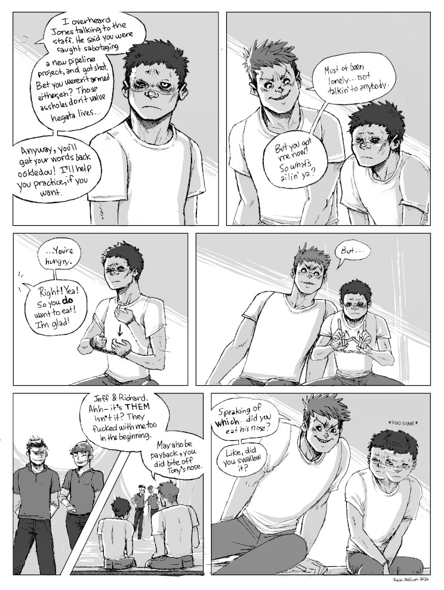
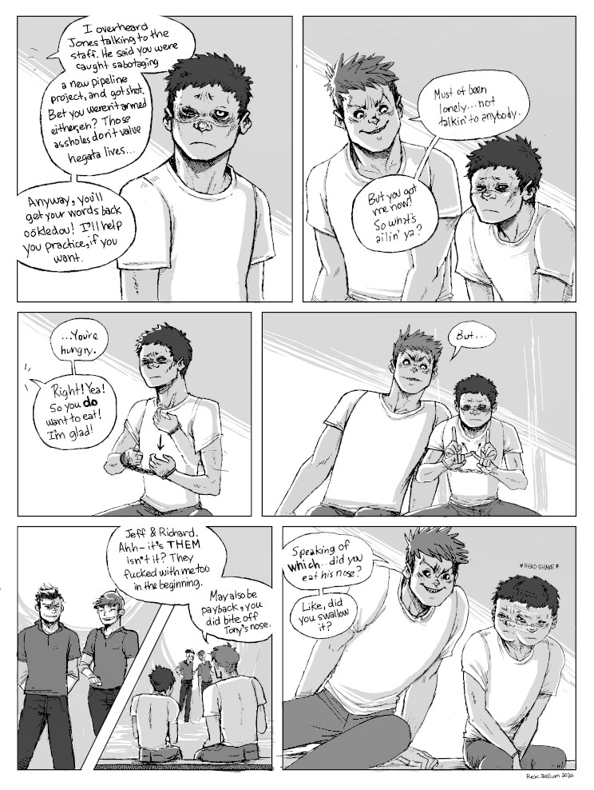
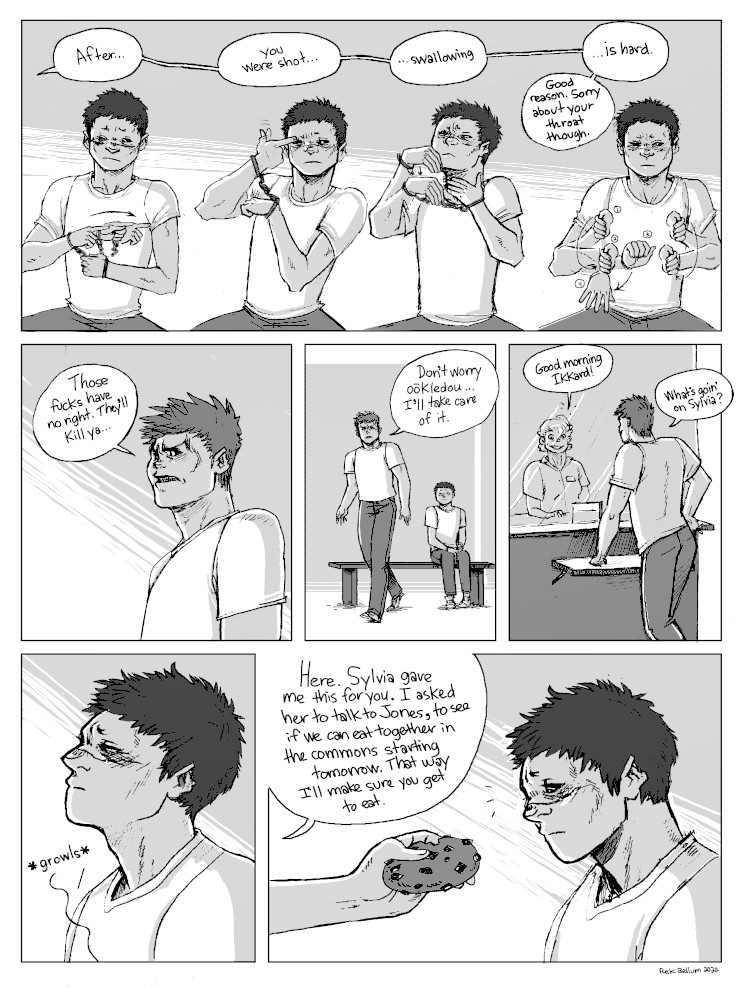
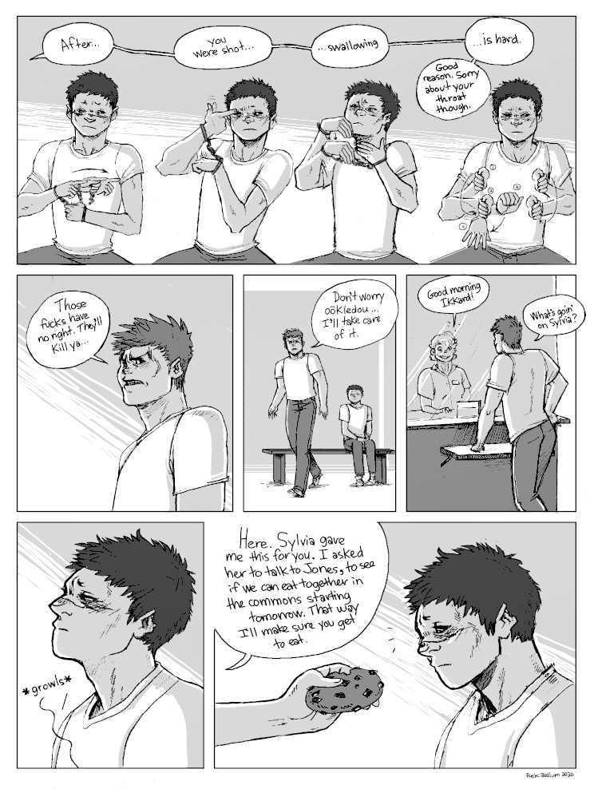
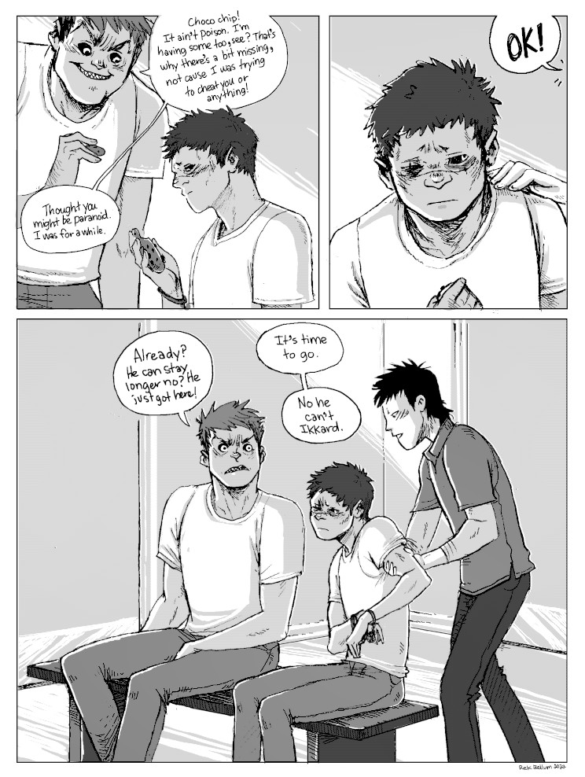
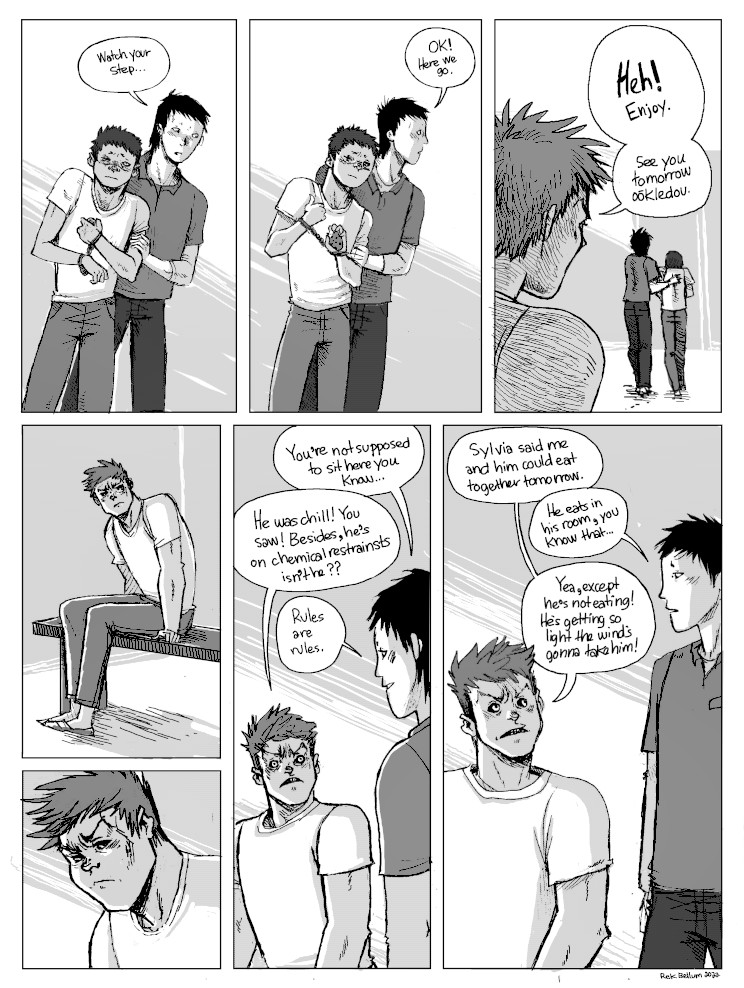
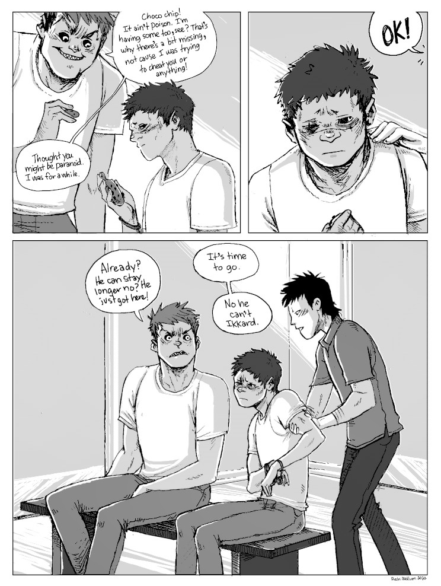
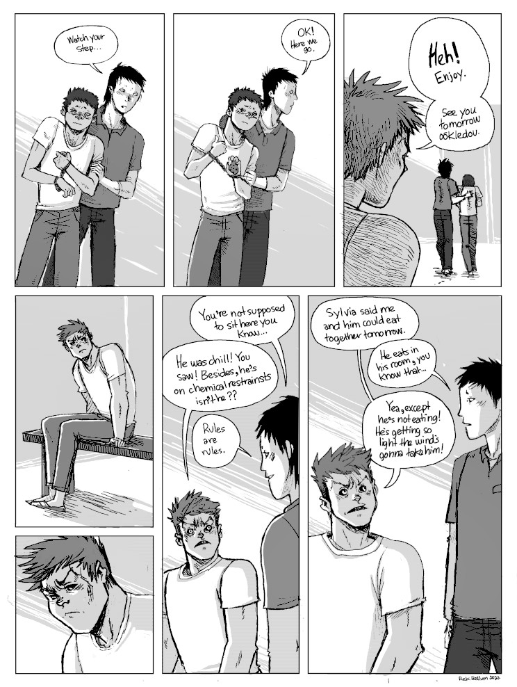

Liskar
Context. After his accident, Hakazi(yegon) is incarcerated in Liskar. His injuries make it difficult for him to communicate, and he feels more alone than ever, but his stay there is made better when he meets a fellow inmate
Hand Speak. In this sequence, I used Hand Speak, or Plain Sign Talk. It is a trade language, formerly trade pidgin, that was once the lingua franca across what is now central Canada, the central and western United States and northern Mexico, used among the various Plains Nation. I was going to use asl(American Sign Language) in this comic, but after learning about Hand Speak I decided to use that instead.
I've added Hand Speak images(drawn by A. J. Stover) from the book Universal Indian Sign Language by William Tokins(published in 1926). It is worth noting that although the book title uses the word 'Indian', and that the language is sometimes called 'Plains Indian Sign Language', it is is considered pejorative by many who are Indigenous, especially in Canada.
I will add sequences that precede and follow this one soon.
Warning. Some violence, blood.
[Status: finished]
 

 

 




Return to hakum project.